Project 3 · CS180, Fall 2026 · Tan Ee Khai
Part A uses a pretrained flow model (PixNerd-XXL) to denoise, generate and edit 512×512 images, and to make visual anagrams and hybrid images. Part B trains a small UNet on MNIST from scratch: first as a one-step denoiser, then as a time- and class-conditioned flow matching model.
Throughout, t = 0 is pure Gaussian noise and t = 1 is a clean image. A noisy image is the straight-line blend xt = (1 − t) ε + t x1, and the model predicts the velocity x1 − ε that moves along that line toward the clean image.
All Part A results use seed 180, Euler step size h = 0.02, CFG weight w = 7 where guidance is used, and the prompt "a high quality photo" unless stated otherwise. My own image for Sections 1.1–1.5 is a crossing sign and street lamp at sunset.
One Gaussian noise tensor ε is sampled and reused at all three times, so the panels differ only in t. Both endpoints were checked exactly: t = 0 returns ε and t = 1 returns the image.
def interpolate(image, noise, t):
# x_t = (1 - t) * eps + t * x_1: t = 0 is pure noise, t = 1 is the clean image.
return (1 - t) * noise + t * image
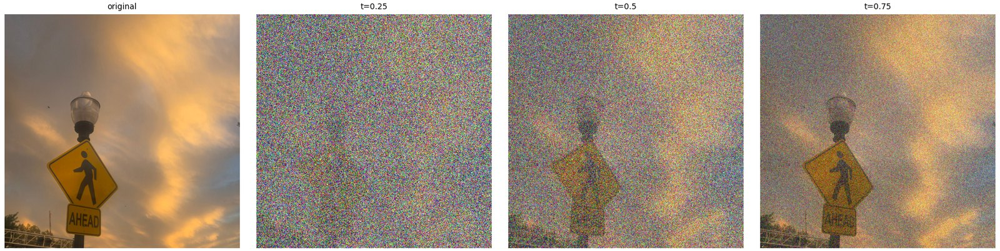
The image part of xt is scaled by t, so each noisy image is first divided by t to restore its brightness, then Gaussian-blurred. The notebook tries σ = 1, 2, 4, 8, 16 (kernel size 6σ + 1) and keeps the σ with the lowest mean squared error to the clean image.
if GROUP in ("all","core"):
blurred = {}
for t,x in noisy.items():
candidates = {s: gaussian_blur(x/t, [int(6*s+1)]*2, [s,s]) for s in [1.,2.,4.,8.,16.]}
sigma = min(candidates, key=lambda s: ((candidates[s]-image)**2).mean().item())
blurred[t] = candidates[sigma]
panel(f"blur_{t}", {"noisy":x,f"blur sigma={sigma}":blurred[t]}, columns=2)
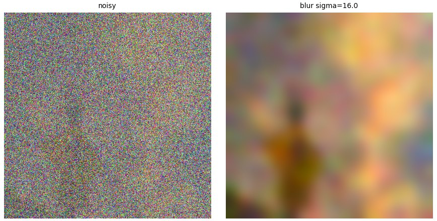
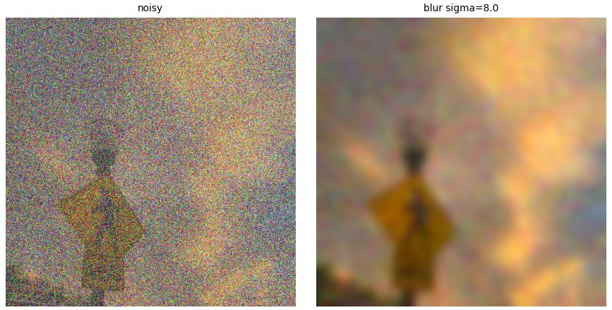
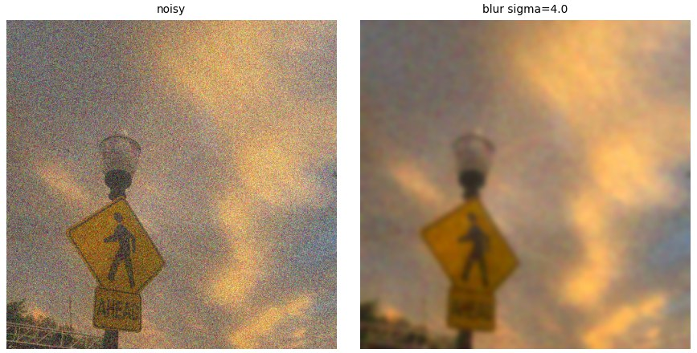
The noisier the input, the larger the blur needed, and the more detail is lost with it. At t = 0.25 only coloured blotches and a dark silhouette remain. At 0.50 the sign and lamp are visible as soft shapes, and at 0.75 the scene is recognisable but the "AHEAD" text is unreadable. Blurring cannot tell noise from detail, so it removes both.
With the pretrained model, one velocity prediction is enough to jump straight from t to the clean endpoint: x̂1 = xt + (1 − t) v̂.
def one_step_denoise(x, t, condition, predict_velocity):
# Follow the predicted velocity straight to t = 1 in a single jump.
return x + (1 - t) * predict_velocity(x, t, condition)
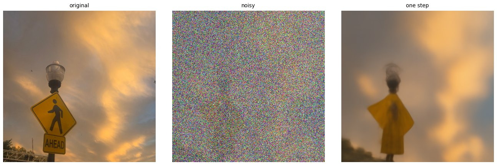
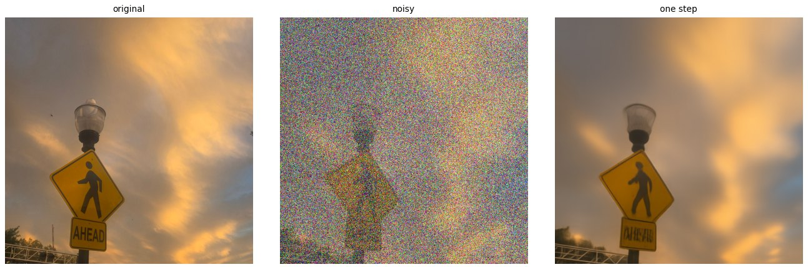
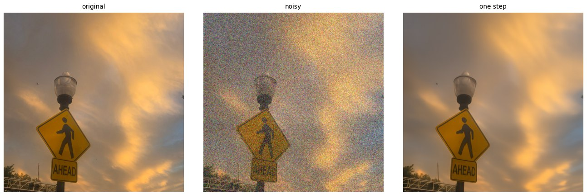
One step is far better than blurring, but its quality depends on how much noise is left. At t = 0.25 the sign comes back as a soft yellow figure-like blob and the lamp as a smudge. The model predicts the average of all clean images that could have produced this noisy input, and with this much noise that average is blurry. At 0.50 the sign, figure and lamp are recovered but soft, and at 0.75 the estimate is almost identical to the original, including the readable "AHEAD" text.
The predicted update (1 − t) v̂ is compared with the ground-truth update (1 − t)(x1 − ε) = x1 − xt, computed from the saved noise. The error map is the RMS difference across RGB at each pixel. All updates share one symmetric colour scale with zero at mid-grey, and the error maps share one colour range across the three times.
@torch.inference_mode()
def velocity_diagnostics(x_t, t, clean_image, epsilon, condition, predict_velocity):
"""Return predicted_update, ground_truth_update, and error_map.
Both updates have shape (B, 3, H, W).
The error map has shape (B, H, W): average only over RGB, keeping each pixel.
Return raw values before display scaling or clipping.
"""
predicted_update = (1 - t) * predict_velocity(x_t, t, condition)
ground_truth_update = (1 - t) * (clean_image - epsilon) # equals clean_image - x_t
error_map = ((predicted_update - ground_truth_update) ** 2).mean(dim=1).sqrt()
return predicted_update, ground_truth_update, error_map
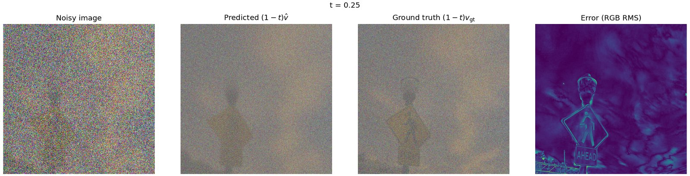
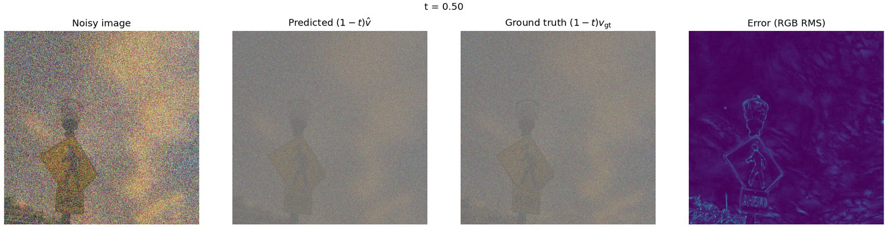
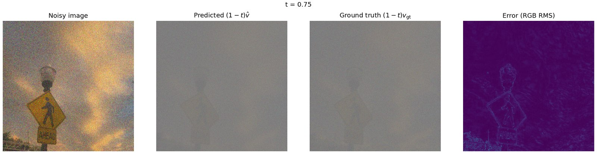
The predicted and ground-truth updates agree on the large shapes and colours. The error concentrates on edges and fine detail: the sign outline, the walking figure, the "AHEAD" text, the lamp and the railing. Those details are exactly what the noise hides, so the model cannot know them. The error also shrinks as t increases; at t = 0.75 only faint outlines remain.
Instead of one jump, the sampler takes small steps x ← x + h v(x, t), asking the model for a new velocity after every step and shortening the last step so it lands exactly on t = 1. It was checked on a constant velocity field: 50 updates from t = 0, 25 from t = 0.5, and 4 from t = 0.93 with a shortened final step, each ending at the exact expected value. Starting from the saved t = 0.5 input gives 25 updates.
@torch.inference_mode()
def euler_sample(x_start, t_start, step_size, velocity):
"""Integrate dx/dt = velocity(x, t) from t_start to 1.
Returns the final state and a list of (t, x) states: the initial state,
every fifth update, and the final state.
"""
# Small tolerance so float error in (1 - t_start) / step_size never adds an extra tiny step.
num_steps = math.ceil((1 - t_start) / step_size - 1e-6)
x = x_start
states = [(t_start, x)]
for i in range(num_steps):
t = t_start + i * step_size
h = min(step_size, 1 - t) # the last step is shortened to land exactly on 1
x = x + h * velocity(x, t)
if i == num_steps - 1:
states.append((1.0, x))
elif (i + 1) % 5 == 0:
states.append((t + h, x))
return x, states
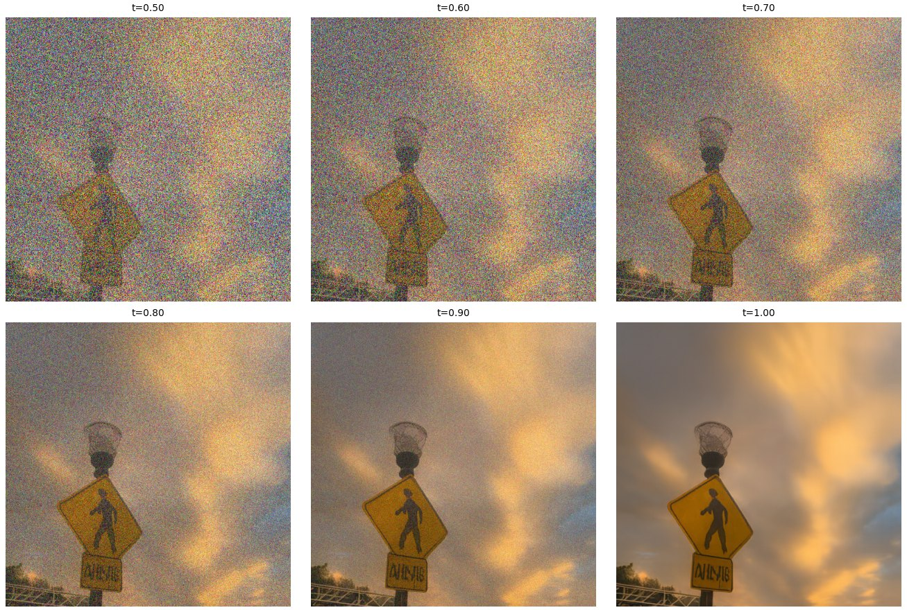
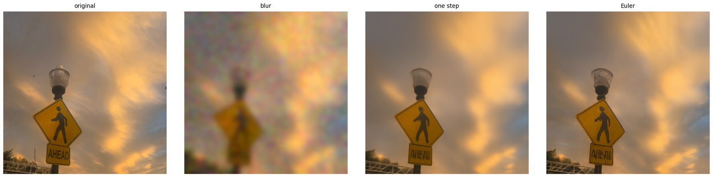
| method (t = 0.5 input) | MSE to original |
|---|---|
| Gaussian blur (σ = 8) | 0.0055 |
| one-step | 0.0020 |
| Euler, 25 steps | 0.0025 |
The noise decreases along the trajectory and by t = 0.7, the sign is clear, while t = 1.0 produces a sharp image. Blur keeps the blobs but no fine detail, and one-step is smooth but soft. Euler, lastly, is sharpest with lamp detail and words, though the lamp produces a fake wire mesh and "AHEAD" does not look like "AHEAD" anymore. That is why one-step has lower MSE even though Euler looks better to me. MSE rewards the safe average, and sharp but wrong details likely cost more than the blur.
Setting t_start = 0 and passing pure noise to the same sampler generates new images (50 Euler steps, no guidance).
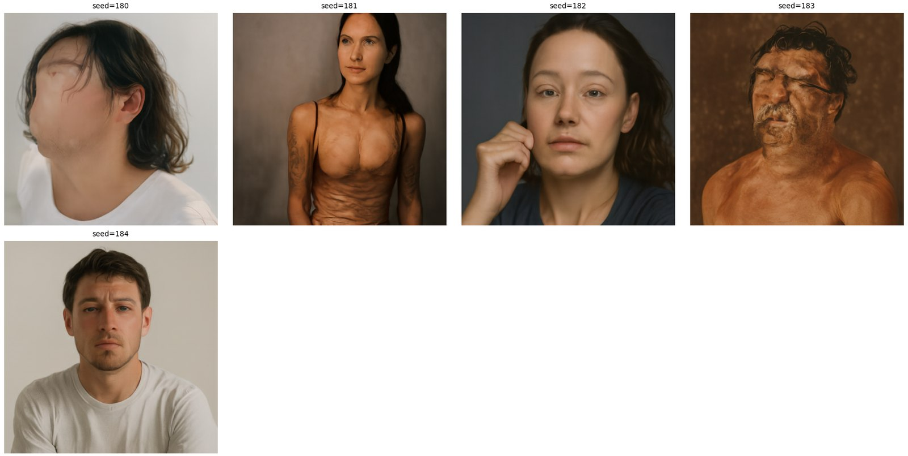
All five samples are portraits of people, so the generic prompt seems to favour this subject. Without guidance the quality is uneven: seed 180's face is missing and seed 183's is badly distorted, while seeds 182 and 184 look like believable photos.
CFG evaluates the model twice at the same x and t, once with the prompt and once with the empty prompt "", and extrapolates away from the unconditional prediction: v = vc + w (vc − vu), with w = 7. A check confirms that w = 0 gives exactly the conditional prediction. The five samples reuse the initial noises from 1.6.
def cfg_velocity(x, t, condition, w, predict_velocity, null_condition=''):
v_cond = predict_velocity(x, t, condition)
v_uncond = predict_velocity(x, t, null_condition)
return v_cond + w * (v_cond - v_uncond)
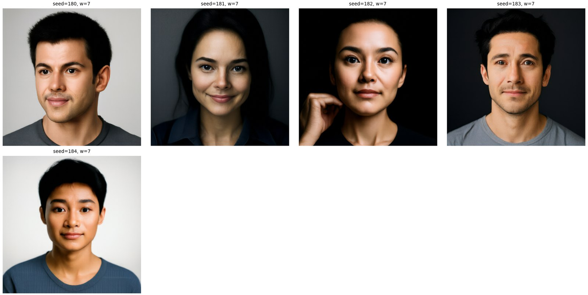
With CFG every sample is a clean, sharp, centred studio headshot with higher contrast and a plain background, with none of the distortions from 1.6. The cost is variety: all five are front-facing headshots of a similar style. Each seed keeps its rough layout, for example seed 182 keeps the hand raised to the face.
Editing follows SDEdit. The input y is noised to a starting time tstart with (1 − tstart) ε + tstart y, then integrated back to t = 1 with CFG and the generic prompt. A small tstart adds more noise and allows a bigger edit, and a large tstart keeps the result close to the input. The same noise is used for every starting time.
def edit(image, noise, t_start, condition, predict_velocity, w=7, step_size=0.02):
# SDEdit: jump to t_start on the image/noise path, then integrate back to t = 1 with CFG.
x = interpolate(image, noise, t_start)
velocity = lambda x, t: cfg_velocity(x, t, condition, w, predict_velocity, null_condition)
x, _ = euler_sample(x, t_start, step_size, velocity)
return x
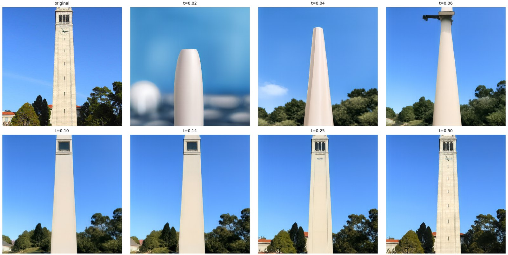
At 0.02 only a pale vertical shape against blue survives, and the model turns it into a white cylindrical object. From 0.04 to 0.06 it becomes a tapered white tower among trees, and at 0.10–0.14 a plain obelisk with a single window. The belfry arches return at 0.25, and at 0.50 the clock and details are back.
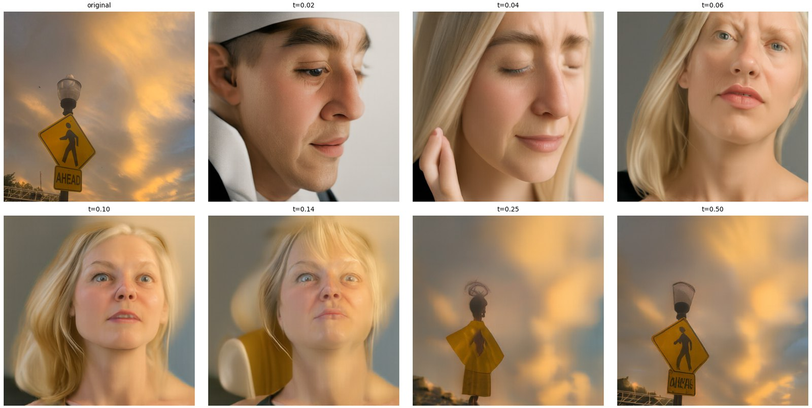
From 0.02 to 0.14 the model produces portraits of people, the same subject it favoured in 1.6, keeping only the warm colours. At 0.25 the sign becomes a figure in a yellow cloak, and at 0.50 the sign and lamp return with garbled text.
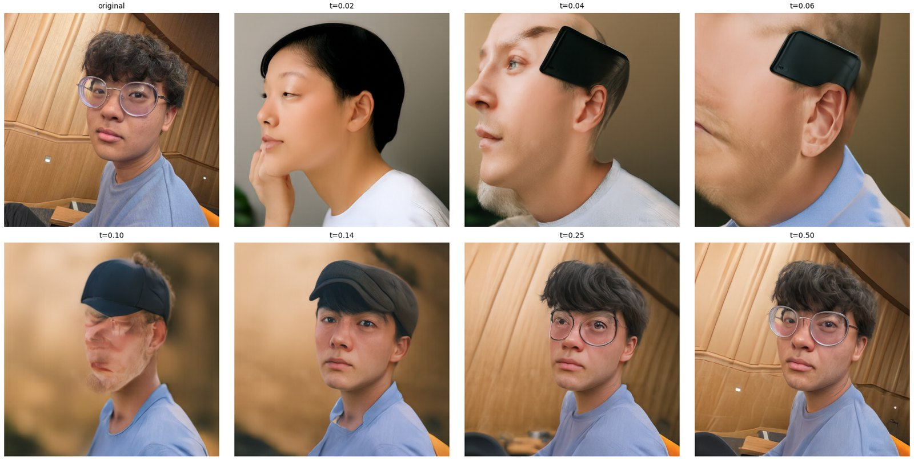
At 0.02 it is a different person entirely, and at 0.04–0.06 a man with a dark object over his ear. From 0.10 the pose, blue shirt and background colours match the input, and at 0.14 it is a young man in a flat cap. The glasses and hair return at 0.25, and 0.50 is close to the original.
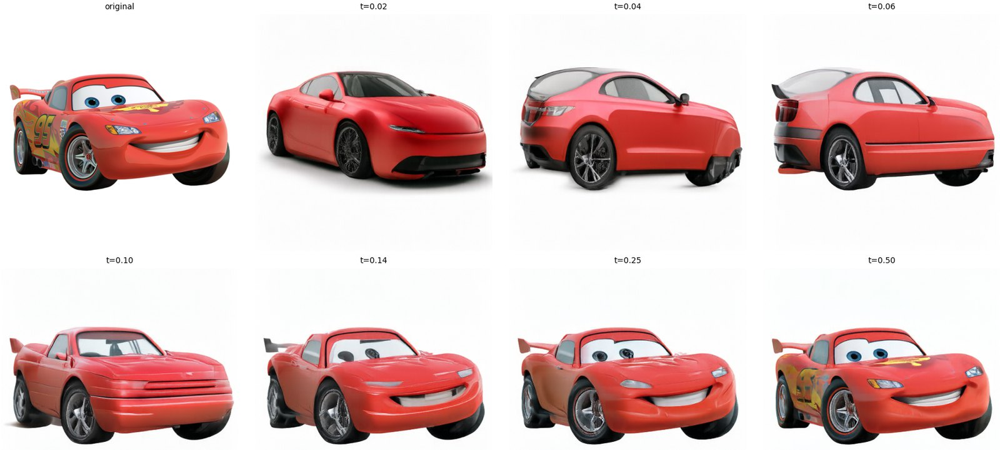
This works especially well. From 0.02 to 0.10 the cartoon becomes realistic red cars with no face. At 0.14 cartoon eyes and a mouth appear, and by 0.50 it is McQueen again, number decal included.
My first two drawings used thick black outlines on white. They snapped back to the drawing early, because a black-on-white drawing is already a plausible "photo" of a drawing. So I drew two more with flat colour and no outlines, and added starting times 0.05, 0.07 and 0.08 to look inside the gap where the change happens.
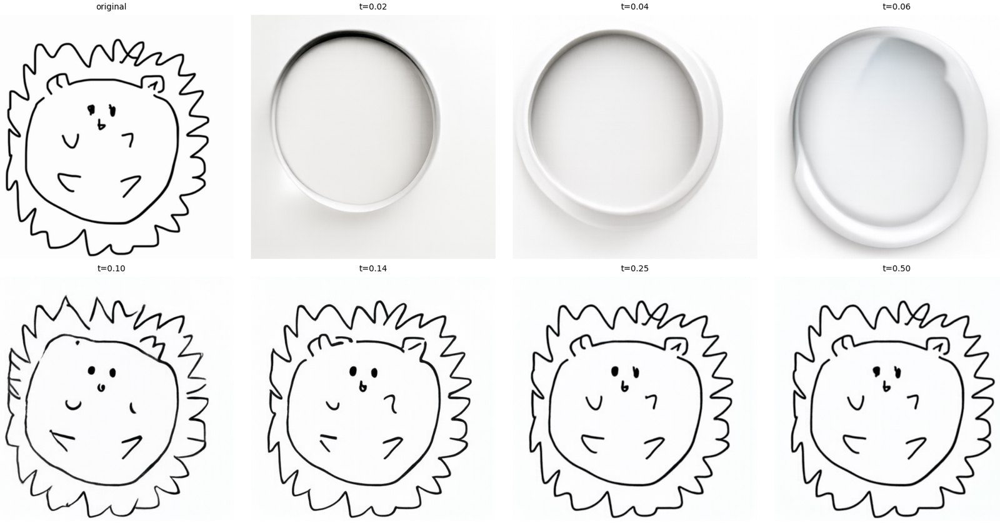
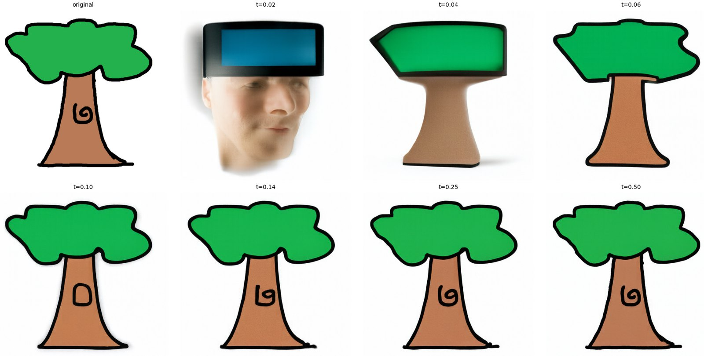
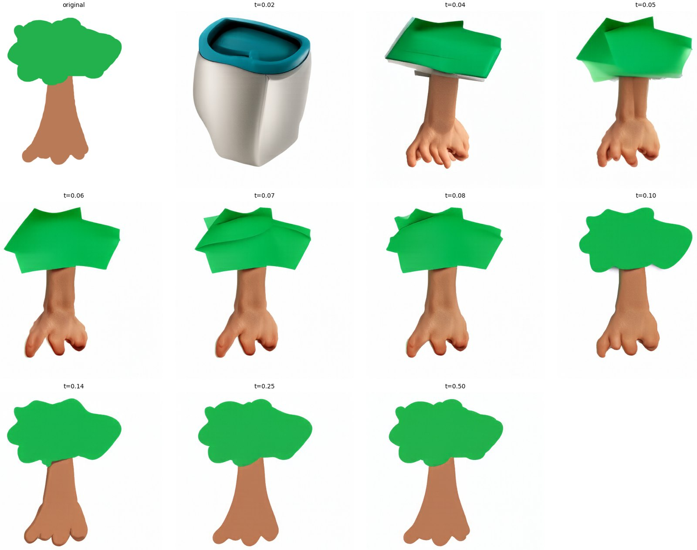
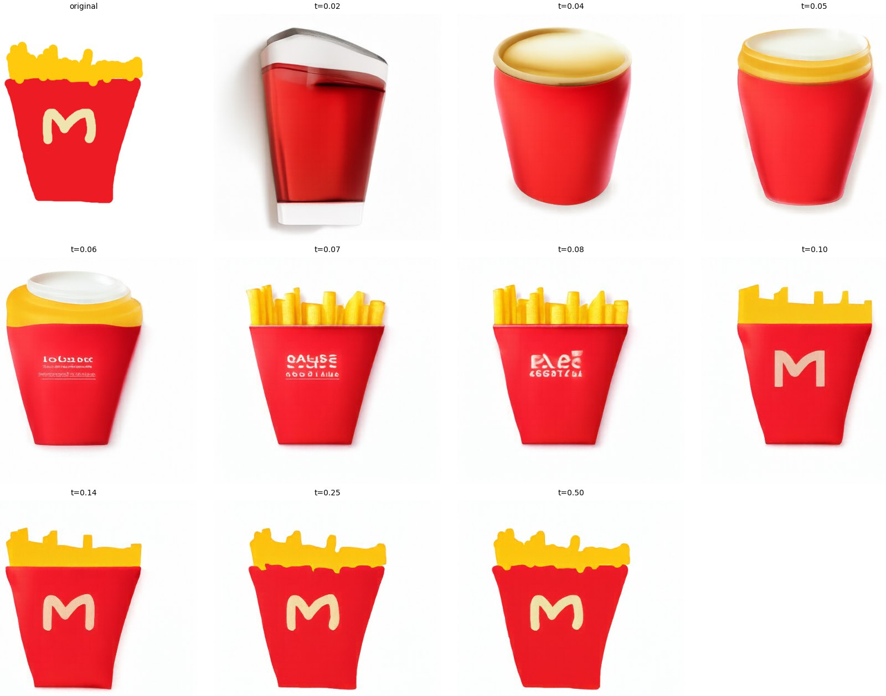
The model only sees the layout and colours, not what the drawing is meant to be. With the generic prompt it picks whatever real object fits those shapes best, so the recognisable and realistic results sit between t = 0.07 and t = 0.08.
The same procedure, but the generic prompt is replaced by one describing the edit.
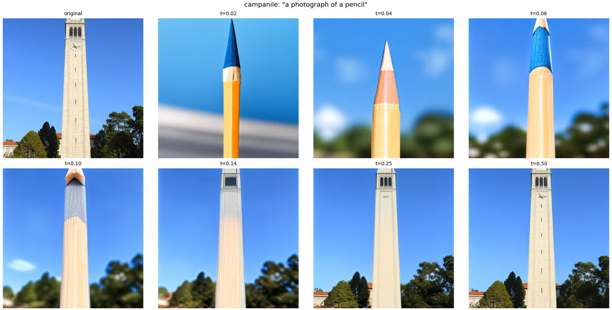
From 0.02 to 0.10 the tower becomes a real pencil standing against the sky and trees, keeping its tall, narrow framing. At 0.14 it is a tower with a pencil-like surface, and from 0.25 the Campanile wins.
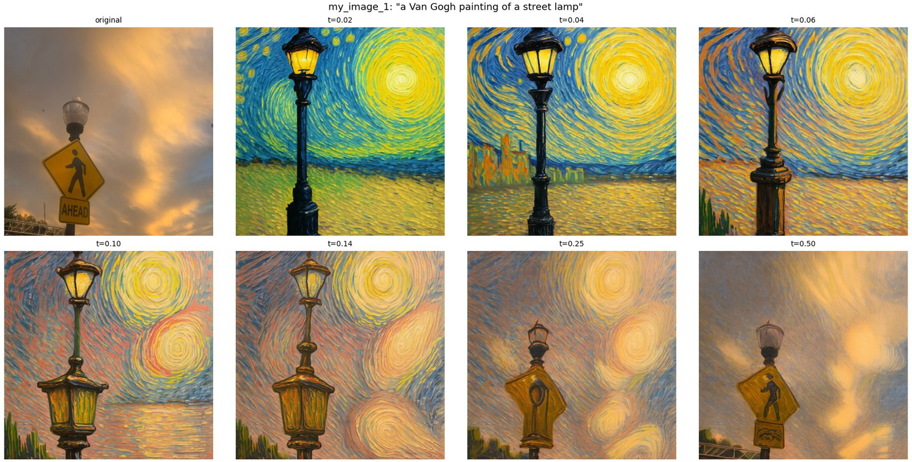
From 0.02 to 0.14 it is a swirling impasto painting of a street lamp, with the sign gone and the sunset turned into swirling skies. At 0.25 the sign returns, painted, and at 0.50 the photo is back with a light painted texture.
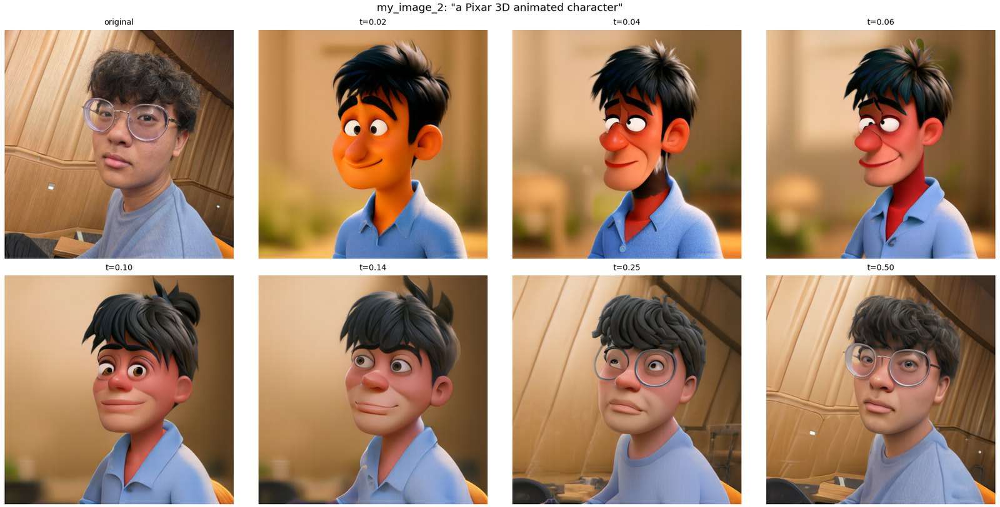
From 0.02 to 0.14 the portrait becomes a cartoon character with the same pose and blue shirt. At 0.25 the glasses and curly hair come back in a 3D-animated style, and at 0.50 it is close to the original photo with smoothed skin.
At each Euler step, the CFG velocity for prompt a is computed on x, and the CFG velocity for prompt b on x rotated by 180°, then rotated back. The two are averaged. A 180° rotation only rearranges pixels, so the rotated noise is still Gaussian and the model sees a normal input. A check confirms that rotating twice returns the original.
def visual_anagrams(noise, condition_a, condition_b, predict_velocity, w=7, step_size=0.02):
def velocity(x, t):
v_a = cfg_velocity(x, t, condition_a, w, predict_velocity, null_condition)
v_b = rotate180(cfg_velocity(rotate180(x), t, condition_b, w, predict_velocity, null_condition))
return (v_a + v_b) / 2
x, _ = euler_sample(noise, 0, step_size, velocity)
return x
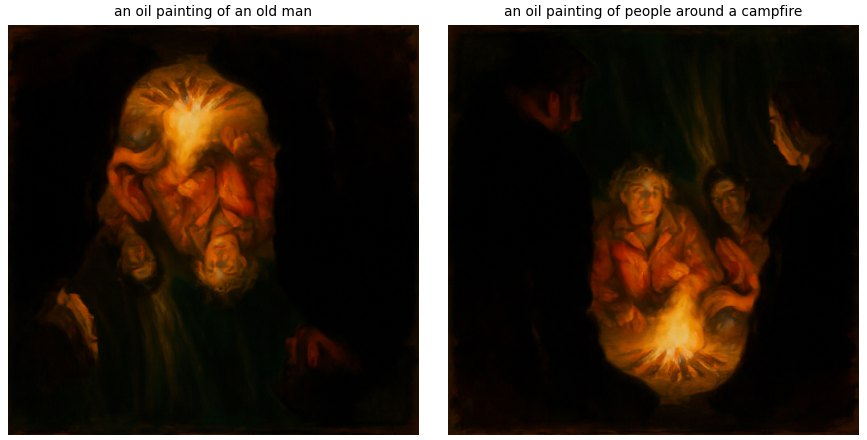
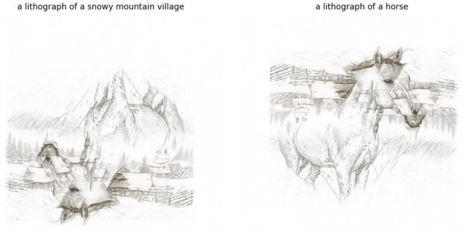
Like the hybrid images in Project 2, but applied to velocities at every Euler step: the low frequencies of the CFG velocity for prompt a (seen from far away) are added to the high frequencies of the velocity for prompt b (seen up close). The low-pass is a Gaussian blur with σ = 16 and kernel size 265, and the high-pass is the velocity minus its low-pass.
def make_hybrids(noise, condition_a, condition_b, predict_velocity, w=7, step_size=0.02):
# condition_a gives the low frequencies (seen from far away), condition_b the high frequencies.
def velocity(x, t):
v_a = cfg_velocity(x, t, condition_a, w, predict_velocity, null_condition)
v_b = cfg_velocity(x, t, condition_b, w, predict_velocity, null_condition)
return lowpass(v_a) + (v_b - lowpass(v_b))
x, _ = euler_sample(noise, 0, step_size, velocity)
return x
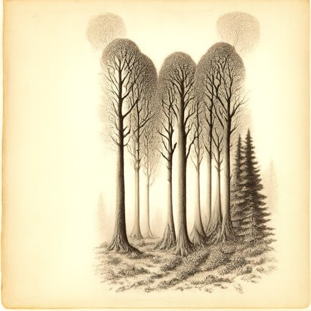
The close-up prompts dominate in both. From far away the overall outline and tone come from the distant prompt, but the skull and cat are hard to make out, with at most an outline and faint ear shapes. The spec warns that several attempts may be needed for a strong hybrid.
MNIST digits are 28×28 greyscale images with pixels in [0, 1]. In Part B the noise is called x0 and the clean digit x1. All runs use seed 180.
The UNet downsamples 28 → 14 → 7 with stride-2 convolutions, averages the 7×7 map down to 1×1, then upsamples back with transposed convolutions. At each resolution the decoder concatenates the matching encoder feature map (skip connections), so fine detail lost in downsampling can come back. Every Conv / DownConv / UpConv is followed by BatchNorm and GELU.
def forward(self, x: torch.Tensor) -> torch.Tensor:
assert x.shape[-2:] == (28, 28), "Expect input shape to be (28, 28)."
x0 = self.conv_in(x)
d1 = self.down1(x0)
d2 = self.down2(d1)
unflatten = self.unflatten(self.flatten(d2))
up1 = self.up1(torch.cat([d2, unflatten], dim=1))
up2 = self.up2(torch.cat([d1, up1], dim=1))
return self.out(self.conv_out(torch.cat([x0, up2], dim=1)))
Noisy digits are made with z = x + σ ε. The same ten test digits and the same noise are used for every σ here and in 1.2.1–1.2.2.
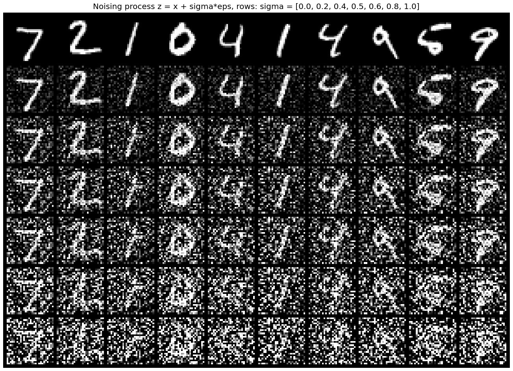
The UNet (D = 128) is trained to map z back to x with an L2 loss at σ = 0.5, using Adam with lr 1e-4, batch size 256 and 5 epochs (1175 updates). Fresh noise is drawn for every batch, so the network never sees the same noisy image twice.
# The training loops
train_losses = []
for epoch in range(num_epochs):
for i, (images, _) in enumerate(tqdm(train_loader, desc=f'epoch {epoch+1}')):
images = images.to(device, non_blocking=True)
noisy = images + noise_level * torch.randn_like(images) # fresh noise every batch
outputs = model(noisy)
loss = criterion(outputs, images)
optimizer.zero_grad()
loss.backward()
optimizer.step()
train_losses.append(loss.item())
if epoch + 1 in (1, 5):
denoise_preview(model, noise_level, f'Denoising, epoch {epoch+1}: clean / noisy (sigma=0.5) / denoised',
f'denoise_epoch{epoch+1}.png')
torch.save(model.state_dict(), OUT / 'denoise_unet.pt')
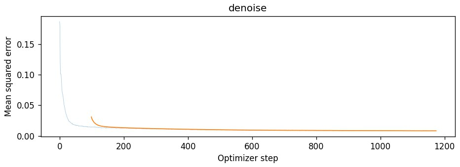
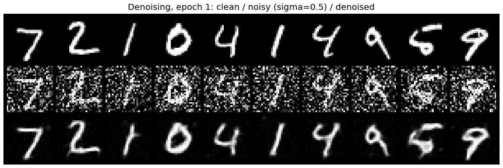
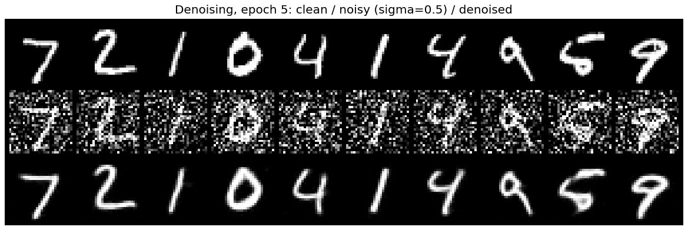
The loss falls quickly in the first few dozen steps and ends at about 0.01. After one epoch the digits are already recovered but slightly blotchy. After five they are clean and smooth.
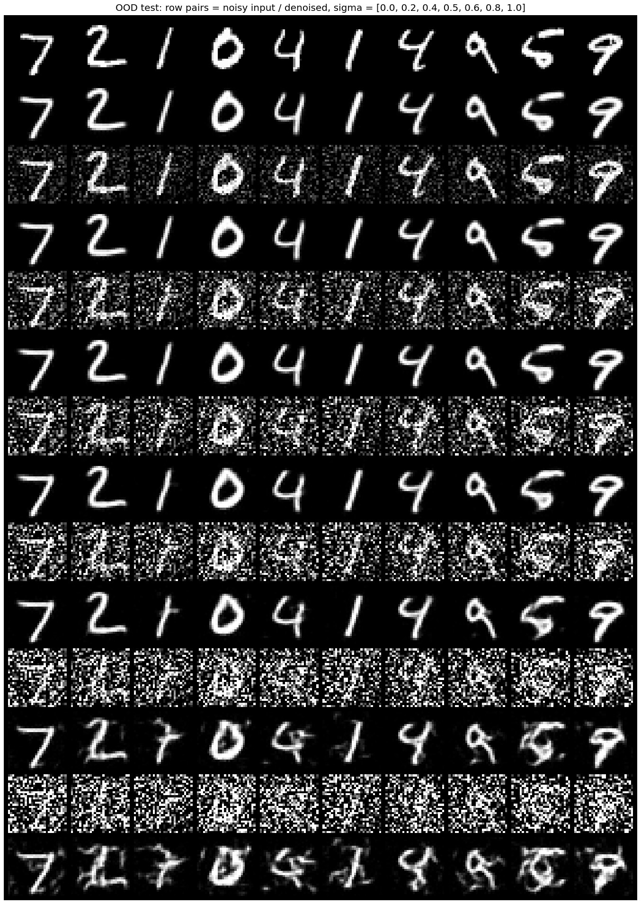
The denoiser was only trained at σ = 0.5. It handles less noise well, passing clean digits through almost unchanged, and is still near-perfect at 0.6. At 0.8 strokes start to break (the 1 turns into a 7-like shape), and at 1.0 most digits come out garbled, because inputs that noisy look nothing like its training data.
A fresh UNet with the same settings is trained to turn pure noise into a digit: its input is torch.randn_like(images) and its target is the clean digit.
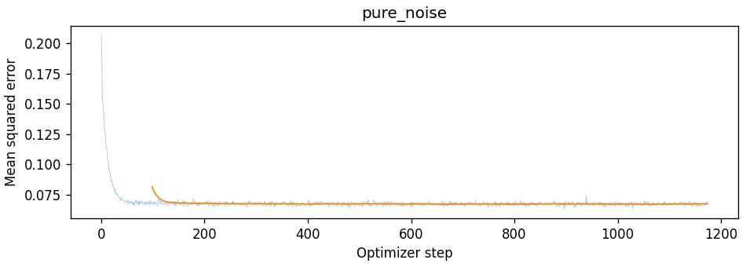
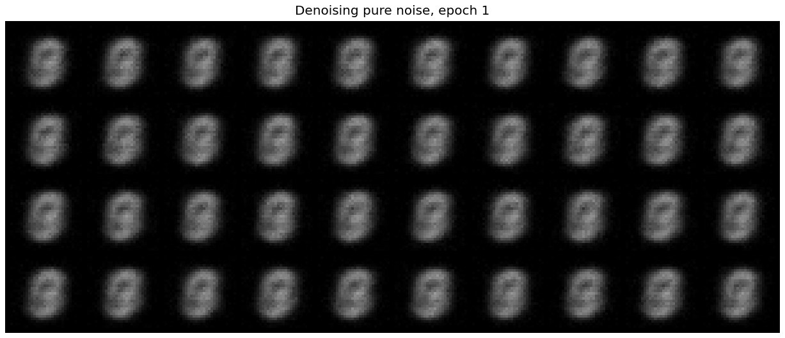
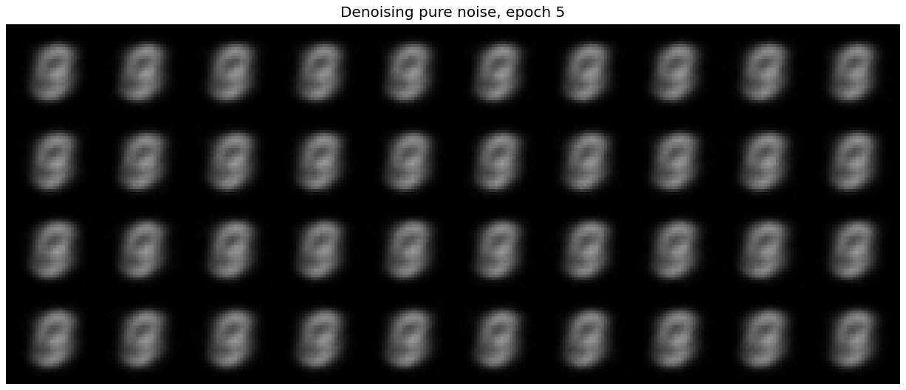
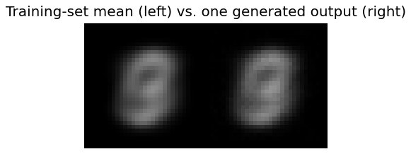
Every generated output looks like the same blurry blob, no matter which noise image goes in. It is not any one digit. It looks like several digits drawn on top of each other: a ring like a 0, with faint strokes from other digits through the middle. By epoch 5 the outputs are almost identical to the pixel-wise mean of the training set shown above.
Why: the input noise is independent of the target digit, so it tells the network nothing about which digit to produce. Under an MSE loss, the best prediction for a target you know nothing about is the value that minimizes the summed squared distance to every training image. That value is their mean, the centroid of the training set. So the network learns to ignore its input and output the "average digit". This is why one-step denoising from pure noise cannot generate new samples, and why we move to iterative flow matching in Part 2.
The flow model must know where it is along the path, since the same noisy image needs a different velocity at different t. The scalar t goes through two FCBlocks (Linear → GELU → Linear) and multiplies two feature maps channel-wise: the unflattened bottleneck (2D channels) and the output of the first up block (D channels).
t = t.float().view(-1, 1) t1 = self.fc1_t(t)[:, :, None, None] t2 = self.fc2_t(t)[:, :, None, None] x0 = self.conv_in(x) d1 = self.down1(x0) d2 = self.down2(d1) unflatten = self.unflatten(self.flatten(d2)) * t1 up1 = self.up1(torch.cat([d2, unflatten], dim=1)) * t2 up2 = self.up2(torch.cat([d1, up1], dim=1)) return self.out(self.conv_out(torch.cat([x0, up2], dim=1)))
Each step samples noise x0, a time t ~ U(0, 1) per image, builds xt = (1 − t) x0 + t x1, and regresses the UNet's output onto the velocity x1 − x0. Training uses D = 64, batch size 64, Adam with initial lr 1e-2 and an exponential scheduler (γ = 0.11/10 per epoch), for 10 epochs.
def time_fm_forward(
unet: TimeConditionalUNet,
x_1: torch.Tensor,
num_ts: int,
) -> torch.Tensor:
"""Algorithm 1
Args:
unet: TimeConditionalUNet
x_1: (N, C, H, W) input tensor.
num_ts: int, number of timesteps.
Returns:
(,) loss.
"""
unet.train()
# t is drawn from the continuous U[0, 1], so num_ts is only used for sampling.
x_0 = torch.randn_like(x_1)
t = torch.rand(x_1.shape[0], device=x_1.device)
t_ = t.view(-1, 1, 1, 1)
x_t = (1 - t_) * x_0 + t_ * x_1
return F.mse_loss(unet(x_t, t), x_1 - x_0)
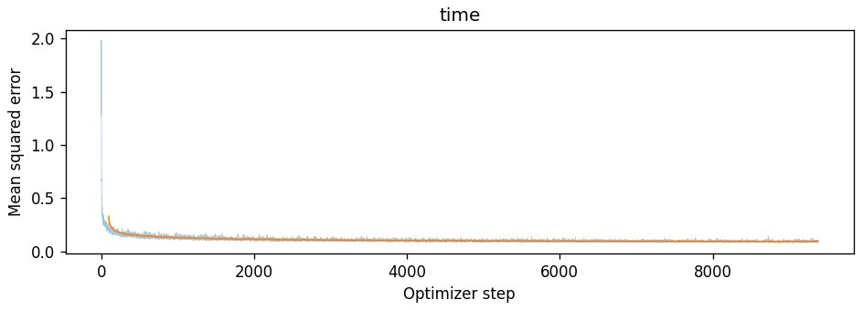
The loss drops quickly and levels off around 0.1. It cannot reach zero, because for a given noisy xt the exact target x1 − x0 is still uncertain, so the network can only learn its average.
Sampling starts from Gaussian noise and takes 50 Euler steps, x ← x + (1/50) u(x, t) with t = i/50. The same seed is used for every checkpoint, so the grids start from identical noise.
@torch.inference_mode()
def time_fm_sample(
unet: TimeConditionalUNet,
img_wh: tuple[int, int],
num_ts: int,
seed: int = 0,
num_samples: int = 40,
) -> torch.Tensor:
"""Algorithm 2
Args:
unet: TimeConditionalUNet
img_wh: (H, W) output image width and height.
num_ts: int, number of timesteps.
seed: int, random seed.
num_samples: int, number of images to generate.
Returns:
(N, C, H, W) final sample.
"""
unet.eval()
dev = next(unet.parameters()).device
g = torch.Generator(device=dev).manual_seed(seed)
x = torch.randn(num_samples, 1, *img_wh, generator=g, device=dev)
for i in range(num_ts):
t = torch.full((num_samples,), i / num_ts, device=dev)
x = x + (1 / num_ts) * unet(x, t)
return x
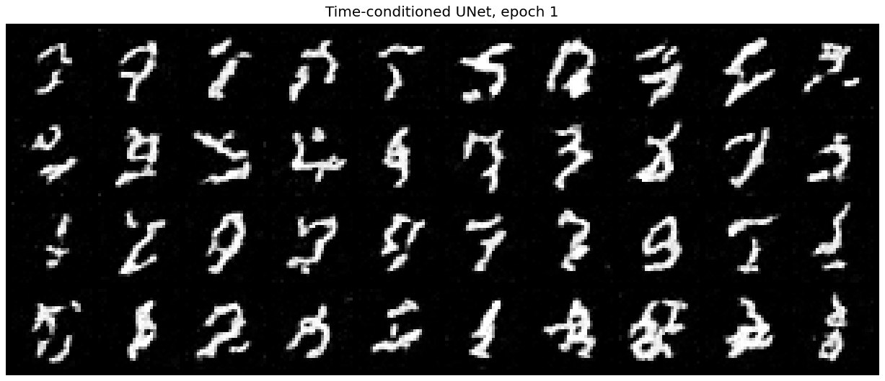
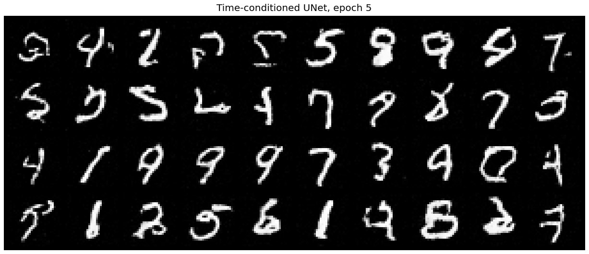
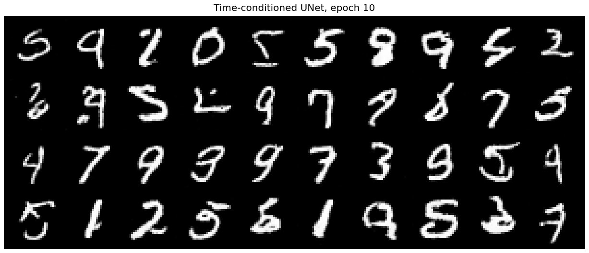
After one epoch the samples are mostly stroke-like squiggles. By epoch 5 many are readable digits, and by epoch 10 most are legible digits of mixed classes, with some still malformed.
The class is turned into a one-hot vector of length 10, and two more FCBlocks map it to per-channel scales. The class scales the two feature maps and the time shifts them: unflatten ← c1 · unflatten + t1, up1 ← c2 · up1 + t2. During training the class is dropped (set to the zero vector) 10% of the time, so the same network also learns an unconditional prediction for classifier-free guidance.
c = F.one_hot(c.long(), self.num_classes).float()
if mask is not None:
c = c * mask.float().view(-1, 1) # dropped class -> all-zero vector
t = t.float().view(-1, 1)
t1 = self.fc1_t(t)[:, :, None, None]
t2 = self.fc2_t(t)[:, :, None, None]
c1 = self.fc1_c(c)[:, :, None, None]
c2 = self.fc2_c(c)[:, :, None, None]
x0 = self.conv_in(x)
d1 = self.down1(x0)
d2 = self.down2(d1)
unflatten = c1 * self.unflatten(self.flatten(d2)) + t1
up1 = c2 * self.up1(torch.cat([d2, unflatten], dim=1)) + t2
up2 = self.up2(torch.cat([d1, up1], dim=1))
return self.out(self.conv_out(torch.cat([x0, up2], dim=1)))
Training is the same as for the time-only model, with the class labels passed in and randomly dropped.
def class_fm_forward(
unet: ClassConditionalUNet,
x_1: torch.Tensor,
c: torch.Tensor,
p_uncond: float,
num_ts: int,
) -> torch.Tensor:
"""Algorithm 3
Args:
unet: ClassConditionalUNet
x_1: (N, C, H, W) input tensor.
c: (N,) int64 condition tensor.
p_uncond: float, probability of unconditioning the condition.
num_ts: int, number of timesteps.
Returns:
(,) loss.
"""
unet.train()
n = x_1.shape[0]
mask = (torch.rand(n, device=x_1.device) >= p_uncond).float() # 0 drops the class
x_0 = torch.randn_like(x_1)
t = torch.rand(n, device=x_1.device)
t_ = t.view(-1, 1, 1, 1)
x_t = (1 - t_) * x_0 + t_ * x_1
return F.mse_loss(unet(x_t, c, t, mask), x_1 - x_0)
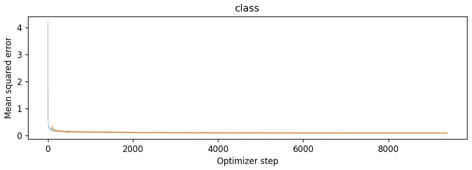
Sampling uses 300 Euler steps with classifier-free guidance, u = uuncond + γ (ucond − uuncond) with γ = 5, generating four of each digit.
@torch.inference_mode()
def class_fm_sample(
unet: ClassConditionalUNet,
c: torch.Tensor,
img_wh: tuple[int, int],
num_ts: int,
guidance_scale: float = 5.0,
seed: int = 0,
) -> torch.Tensor:
"""Algorithm 4
Args:
unet: ClassConditionalUNet
c: (N,) int64 condition tensor. Only for class-conditional
img_wh: (H, W) output image width and height.
num_ts: int, number of timesteps.
guidance_scale: float, CFG scale.
seed: int, random seed.
Returns:
(N, C, H, W) final sample.
"""
unet.eval()
dev = next(unet.parameters()).device
c = c.to(dev)
n = c.shape[0]
g = torch.Generator(device=dev).manual_seed(seed)
x = torch.randn(n, 1, *img_wh, generator=g, device=dev)
cond, uncond = torch.ones(n, device=dev), torch.zeros(n, device=dev)
for i in range(num_ts):
t = torch.full((n,), i / num_ts, device=dev)
u_uncond = unet(x, c, t, uncond)
u_cond = unet(x, c, t, cond)
u = u_uncond + guidance_scale * (u_cond - u_uncond)
x = x + (1 / num_ts) * u
return x
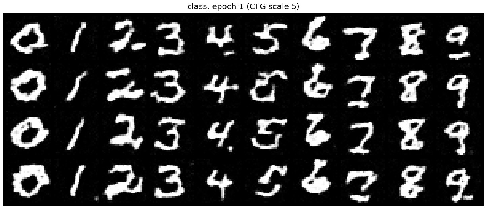
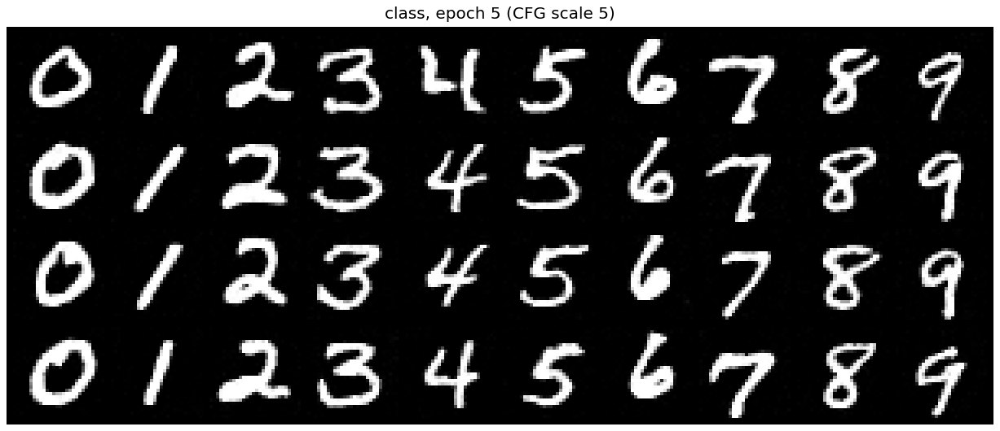
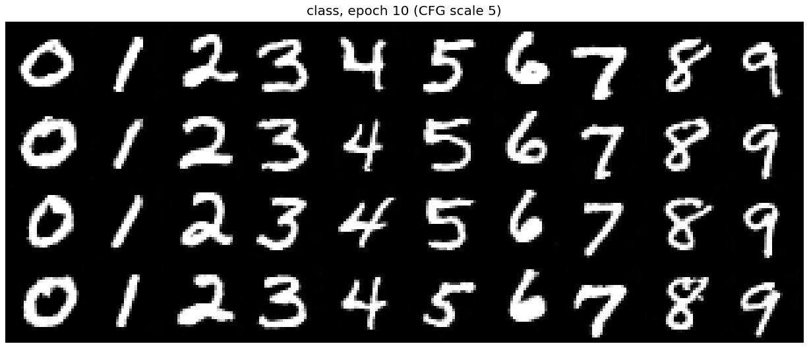
Every column is the requested digit even at epoch 1, though those digits are blobby and speckled. By epoch 5 they are clean, and at epoch 10 they are clean with varied handwriting. Class conditioning converges much faster than the time-only model.
The exponential scheduler starts Adam at 1e-2 and multiplies the learning rate by 0.11/10 after every epoch, so it ends at 1e-3.
To drop the scheduler, I used one constant learning rate of 1e-3, the value the scheduler ends at. 1e-3 is small enough to converge cleanly and still makes quick progress in the first epoch. Everything else (seed, data order, batch size, epochs, 300 Euler steps, CFG scale 5) is the same, so the epoch-10 grids and the loss curves below compare directly.
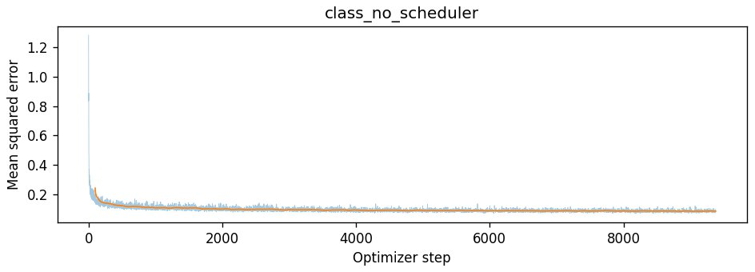
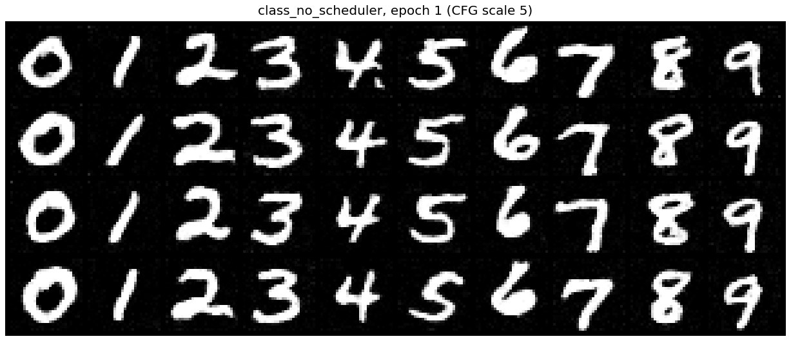
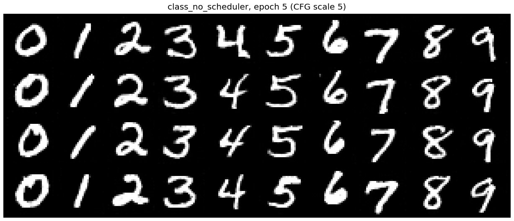
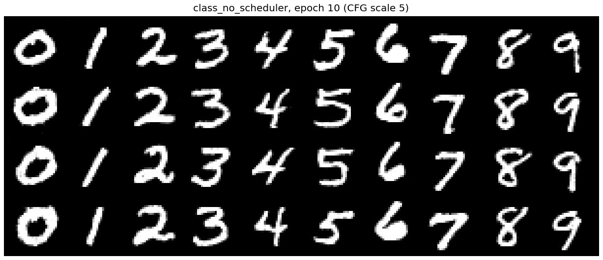
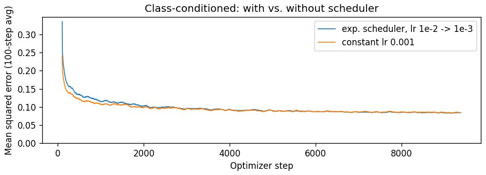
The constant learning rate keeps the same performance. At epoch 1 the no-scheduler digits are already clean, while the scheduled run, still at 1e-2, gives blobby, speckled digits. At epoch 5 both runs are clean and very similar, and the epoch-10 grids are nearly identical, with every digit correct. The constant-rate loss is lower for roughly the first 2000 steps, then the two curves overlap and both end near 0.085.